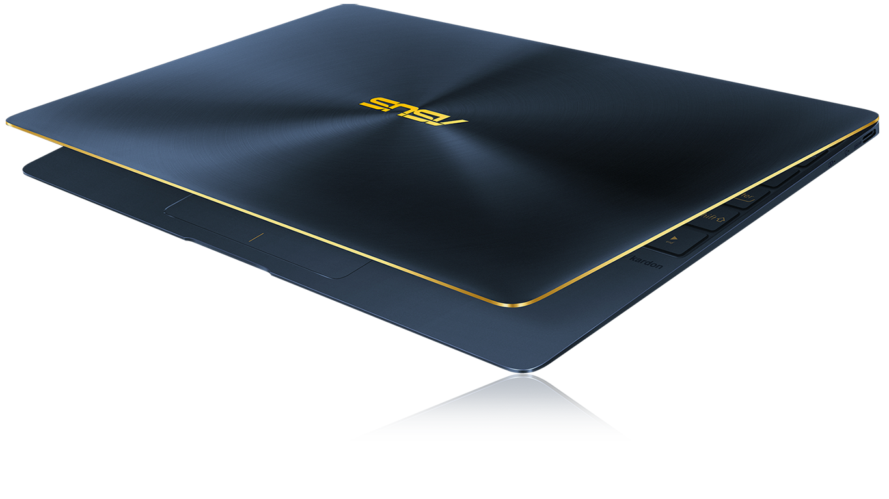
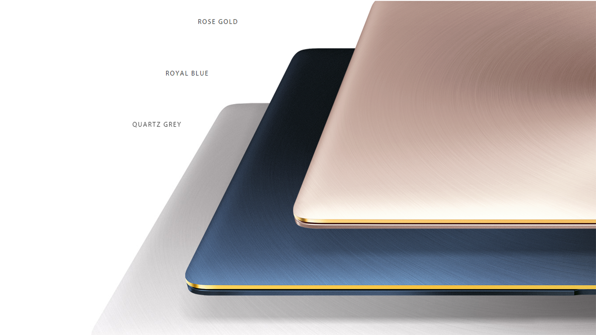
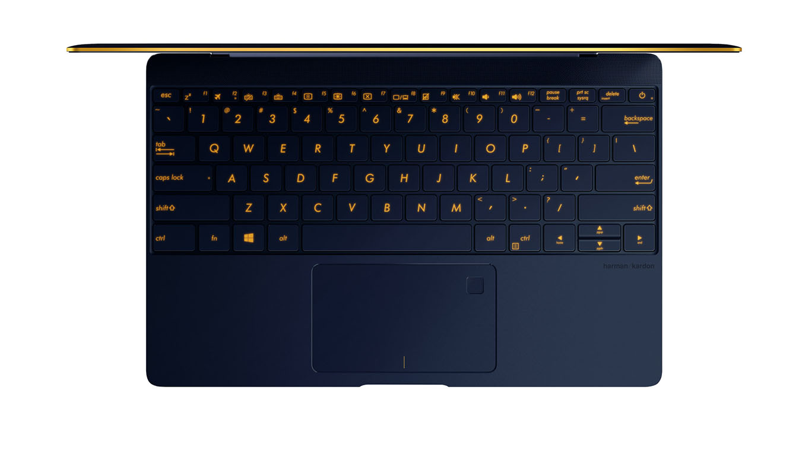
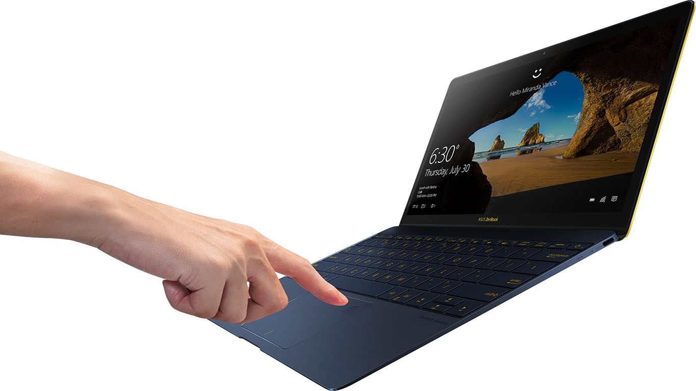
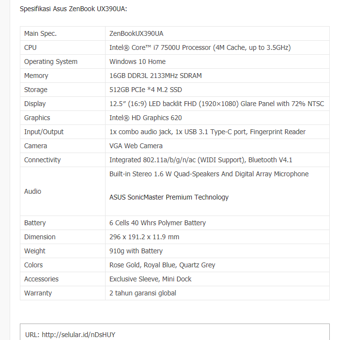
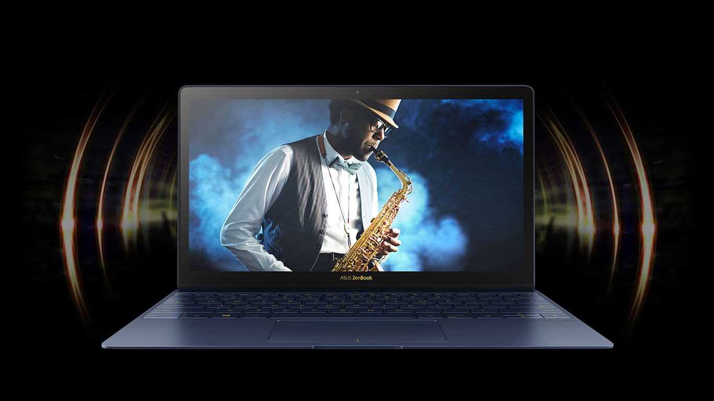
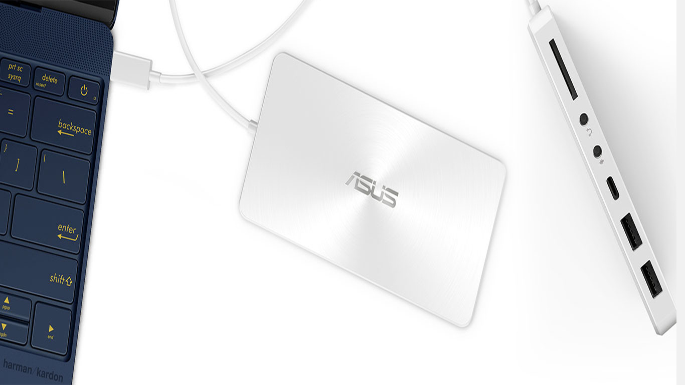
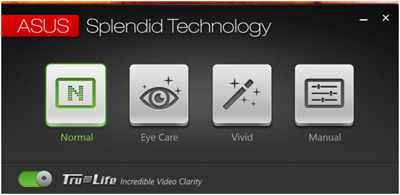
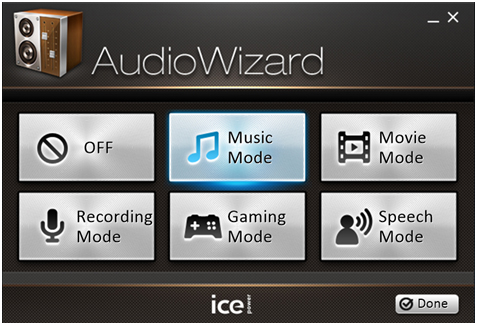

Kenapa Harus Memakai Asus Zenbook UX390, WHY ??
Zenbook UX390, saya sangat rekomendasikan untuk para pelajar, mahasiswa dan pekerja,
memang ada apa ??. Laptop ini memiliki bentuk yang tipis, berat yang ringan,
tampilan luar yang bagus, dan perfoma yang bagus, Kali ini saya akan me-riview laptop ini
dan kita lihat Keunggulannya :
Desain
Zenbook UX390 memiliki desain yang cantik, dengan gabungan warna biru gelap dan warna emas pada tepi layar dan backlight keyboard yang berwarna emas, tersedia juga dalam berbagai warna, yaitu Rose Gold, Royal Blue dan Quartz Grey. Asus membuat desain laptop ini dengan ketipisan 11.9mm dan berat 910g, dengan bahan Aerospace Grade Alumunium Alloy, sehingga sangat ringan namun tetap kuat. Pada layarnya juga terdapat 0.4mm lapisan Corning Gorilla Glass 4 yang kekuatanya 2 kali lebih kuat dari kaca biasa. 
--Keyboard
 Ke Atas Tampilan yang cantik, juga di perlihatkan pada bagian keyboard dan touchpadnya. Pada keyboard nya yang memiliki area luas dengan kerapatan pada sisi laptop memiliki ukuran 2.1mm, dan kerapatan antara tombol keyboard hannya 19,8mm. Dan warna emas pada laptop yang sangat mendukung keindahan laptop tersebut.--Touchpad
 Pada touchpad nya juga menarik, terdapat warna emas, di tengah-tengah tombol klik kiri dan klik kanan, dan ada tombol sensor sidik jari ( fingerprint ) pada bagian pojok kanan atas. kalian bisa menggunakan fingerprint, untuk logi ke dalam windows 10.Perfoma
 Perfoma laptop UltaSlim ini juga jangan diremehkan, karena memakai processor Intel Core i7-7500U, dan sudah dilengkapi dengan Windows 10. Tersedia RAM 8GB tipe DDR3, kecepatan 2133MHz, Up to Hingga 16GB sehingga penggunaan windows 10 terasa ringan dan cepat, ditambah lagi dengan kapasitas penyimpanan PCIe Gen 3 SSD hingga 1TB dan tersedia Port USB Type-C, yang akan membuat proses startup, dan peng Copy an data menjadi lebih cepat.
--Audio
 Terdapat 4 speaker untuk menghasilkan Surround Sound, pada bagian atas untuk suara bass dan frekuensi sedang. Dan 2 lainnya pada bagian bawah untuk frekuensi sedang sampai tinggi.-- Baterai
Penggunaan baterai yang lebih lama, dan pengisian yang cepat. Kemampuan bertahan dalam 9 Jam dengan kapasitas tinggi 40WH. Dengan perkiraan bila anda mengisi daya, untuk pengisian 60% hannya memerlukan waktu 49 menit.Koneksi
Zenbook UX390 menggunakan sebuah Mini-Dock untuk menyambungkan Laptop dengan peralatan lain.  Pada dock tersebut, tersedia lengkap berbagai macam port, USB-C 3.1, USB 3.0, HDMI, VGA, Kabel LAN, Card Reader.Software
Semua Produk Asus Zenbook selalu memiliki pengaturan warna pada layar yang baik, dengan teknologi ASUS Splendid, laptop ini dapat merubah setelan warna pada layar laptop yang bisa di ubah lewat Softwate Splendid Technology. Ada 4 moder yang tersedia, yaitu : Normal Mode, Eye Care Mode, Vivid Mode, Manual Mode.
 Normal Mode adalah mode yang sudah diatur oleh pabrik dan sudah dioptimalkan, agar menampilkan warna yang lebih detail dan akurat.Eye Care Mode adalah mode yang sangat berguna untuk mengurangi kesehatan mata. karena mode ini mengurangi cahaya biru yang keluar pada laptop, sehingga bisa meminimalisir kerusakkan pada mata.
Vivid Mode adalah mode yang memperbesar saturasi warna dan ketajaman, tanpa mengurangi ke aslian dari gambar atau video. Mode ini sangat bagus bila digunakan untuk melihat foto atau film.
Normal Mode adalah mode untuk pengguna mengatur kontras warna sendiri, sehingga bisa mengatur warna yang di hasilkan dengan keadaan sekitar.
Zenbook UX390 Memliki speaker External, yaitu Speaker Harman Karbon.  Kualitas suaranya pun dapat di atur dengan applikasi bawaan laptop, AudioWizard. Terdapat 5 mode yang bisa digunakan, yaitu Music Mode, Movie Mode, Recording Mode, Gaming Mode, Speech Mode, dan Off untuk mematikannya.
Sumber artikel dan Gambar yang di atas di ambil dari https://www.asus.com/id/Laptops/ASUS-ZenBook-3-UX390UA/ dan http://selular.id/device/2017/03/review-asus-zenbook-3-ux390-notebook-premium-membuat-kagum/
Ok terima kasih dan sampai jumpa di artikel yang lainya.